Transformer¶
参考：Stanford CS224n: Natural Language Processing with Deep Learning
目录¶
- Sequence-to-sequence models
- Attention
- Transformer
神经机器翻译 (Neural Machine Translation)¶
Sequence-to-sequence Model¶
Seq2Seq 模型是一种通用的序列转换框架，可以应用于多种任务：
- 机器翻译
- 语音识别
- 问答系统
- 文本摘要
- 对话生成
训练神经机器翻译系统¶
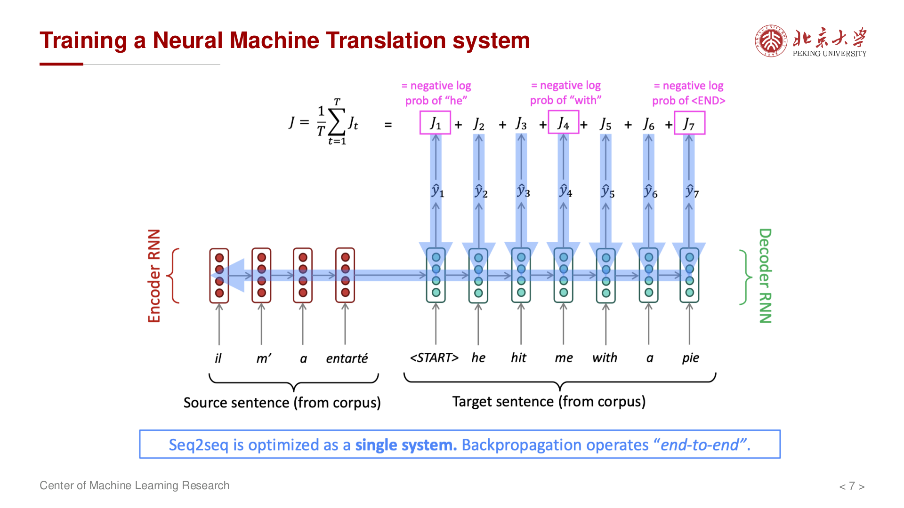
Seq2Seq 模型由 编码器 (Encoder) 和 解码器 (Decoder) 两部分组成。
编码器将输入序列 \((x_1, x_2, \dots, x_n)\) 转换为上下文向量 c：
其中 \(f\) 是 RNN/LSTM/GRU 等循环单元，\(q\) 可以是最后一个隐藏状态或所有隐藏状态的汇总。
解码器根据上下文向量 c 和已生成的输出序列 \((y_1, \dots, y_{t-1})\) 预测下一个词：
其中 \(s_t\) 是解码器的隐藏状态。
RNN 的瓶颈问题¶
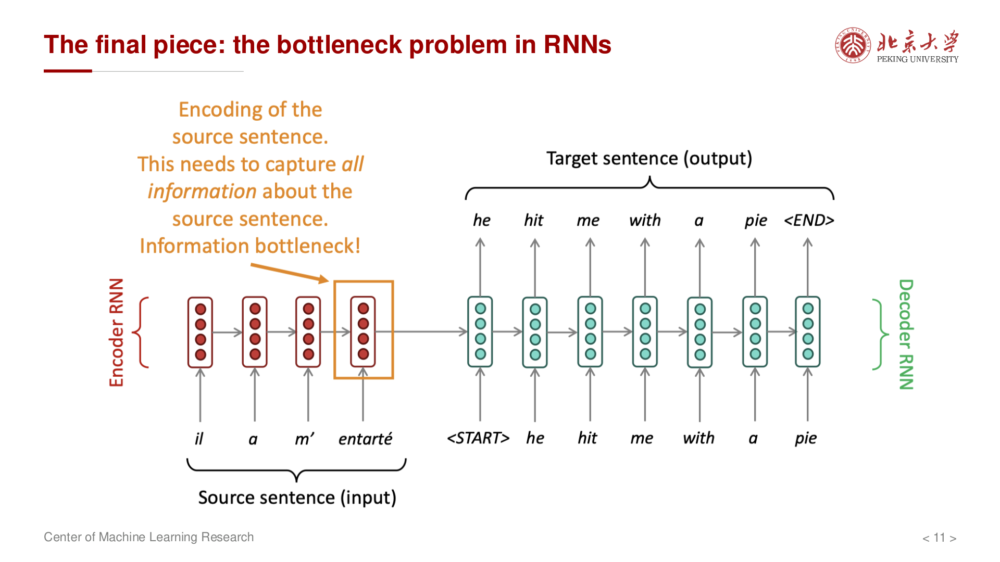
线性交互距离问题¶
在 RNN 中，相距较远的 token 之间的信息需要通过多个时间步传递：
- 早期输入与后期输出之间的交互是 线性 的
- 距离越远，信息损失越大
- 长距离依赖难以捕捉
缺乏并行性¶
RNN 的计算是顺序进行的：
- 必须等待 \(h_{t-1}\) 计算完成后才能计算 \(h_t\)
- 无法利用现代 GPU/TPU 的并行计算能力
- 训练效率低下
Attention 机制¶
起点：RNN 的 Mean-Pooling¶
传统的 Seq2Seq 使用单个上下文向量 c 来编码整个输入序列，这造成了 信息瓶颈。
Attention 是加权平均¶
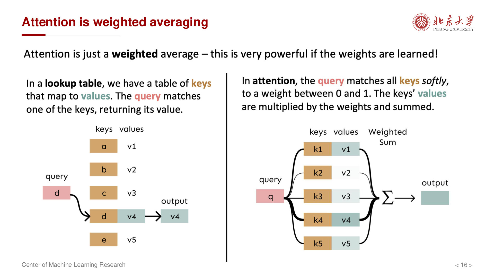
Attention 机制的核心思想：
- 在解码的每一步，都关注输入序列的不同部分
- 为每个输入位置分配一个 注意力权重
- 输出是输入向量的 加权求和
Attention 计算过程¶
对于解码器第 \(t\) 步，计算注意力权重的步骤如下：
第一步：计算注意力分数
其中 \(a\) 是评分函数，\(s_{t-1}\) 是解码器前一时刻的隐藏状态，\(h_i\) 是编码器第 \(i\) 步的隐藏状态。
第二步：Softmax 归一化
第三步：计算上下文向量
第四步：拼接并继续解码
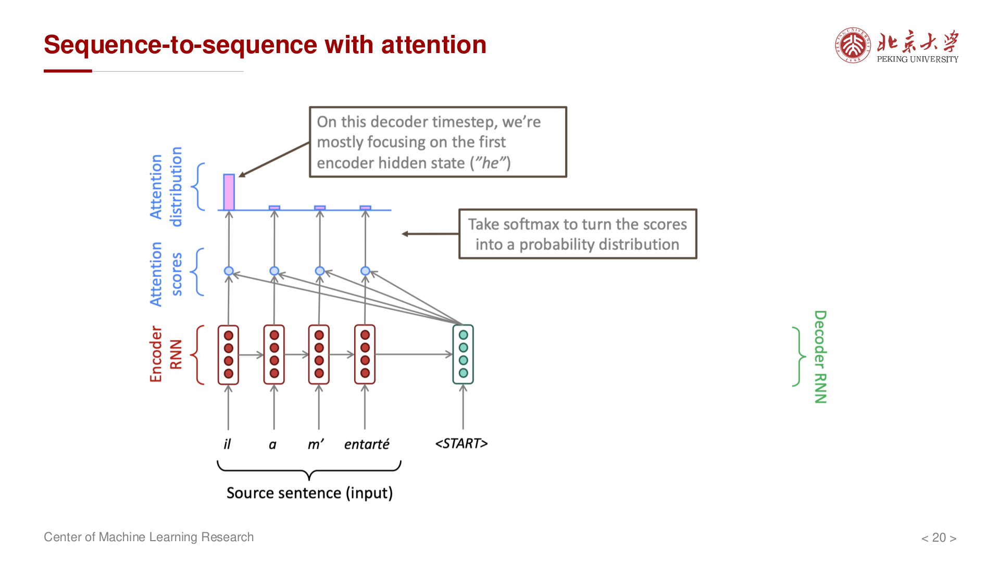
将注意力向量 \(c_t\) 与解码器隐藏状态 \(s_t\) 拼接，用于预测输出：
Attention 的优势¶
- 并行化：注意力权重可以并行计算
- 解决瓶颈：直接访问所有输入位置，无需通过单一向量传递信息
- 可解释性：注意力权重显示了模型关注的输入位置
Attention 的变体¶
常见的评分函数 \(a(s, h)\) 有以下几种形式：
1. Dot Product
2. General (Bilinear)
3. Concat (Additive)
4. Scaled Dot-Product (Transformer 中使用)
Self-Attention (自注意力)¶
核心思想¶
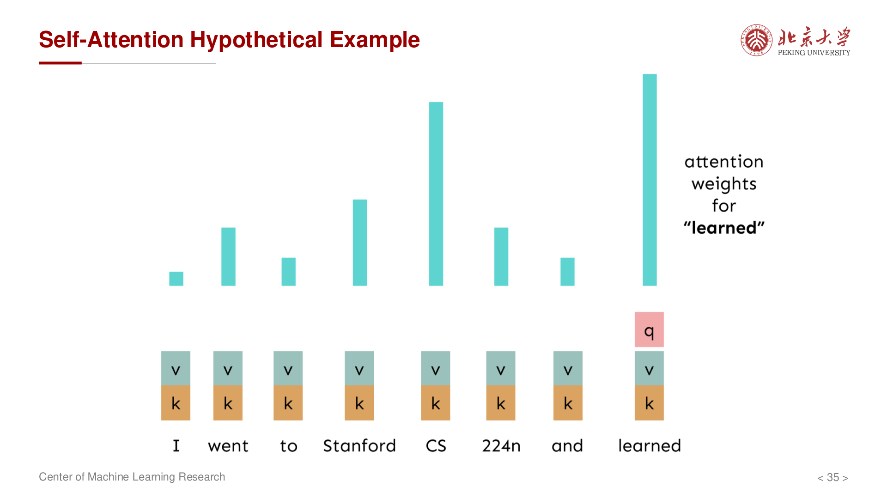
自注意力让序列中的每个位置都能 关注序列中的其他位置，从而捕捉序列内部的依赖关系。
不同于传统的 Attention（编码器-解码器之间的交叉注意力），Self-Attention 的 Query、Key、Value 都来自同一个序列。
Self-Attention 的矩阵表示¶
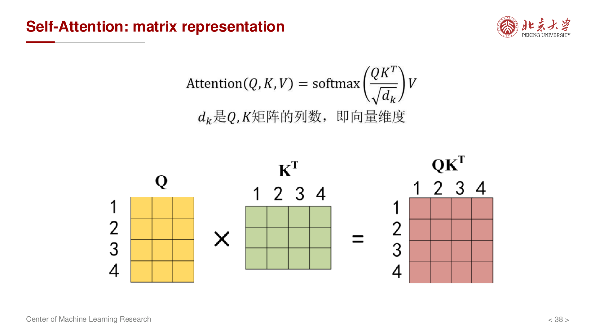
给定输入矩阵 \(X \in \mathbb{R}^{n \times d}\)（\(n\) 个 token，每个维度为 \(d\)）：
第一步：计算 Q、K、V
其中 \(W_Q, W_K, W_V \in \mathbb{R}^{d \times d_k}\) 是可学习的投影矩阵。
第二步：计算注意力分数
第三步：缩放并 Softmax
除以 \(\sqrt{d_k}\) 是为了防止点积过大导致 softmax 梯度消失。
第四步：计算输出
完整公式：
Position Embedding (位置编码)¶
问题¶
Self-Attention 本身是 置换不变 的（permutation invariant）：
- 改变输入序列的顺序，输出也会相应置换
- 模型 无法感知位置信息
解决方案：位置编码¶
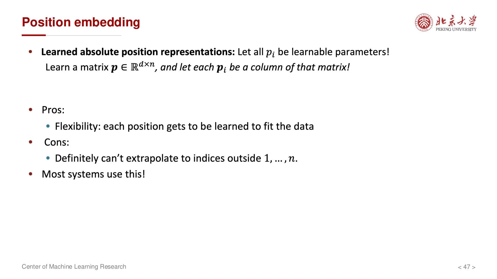
Transformer 使用 正弦/余弦位置编码：
其中 \(pos\) 是位置，\(i\) 是维度索引。
位置编码与词嵌入相加：
Multi-Head Attention (多头注意力)¶
核心思想¶
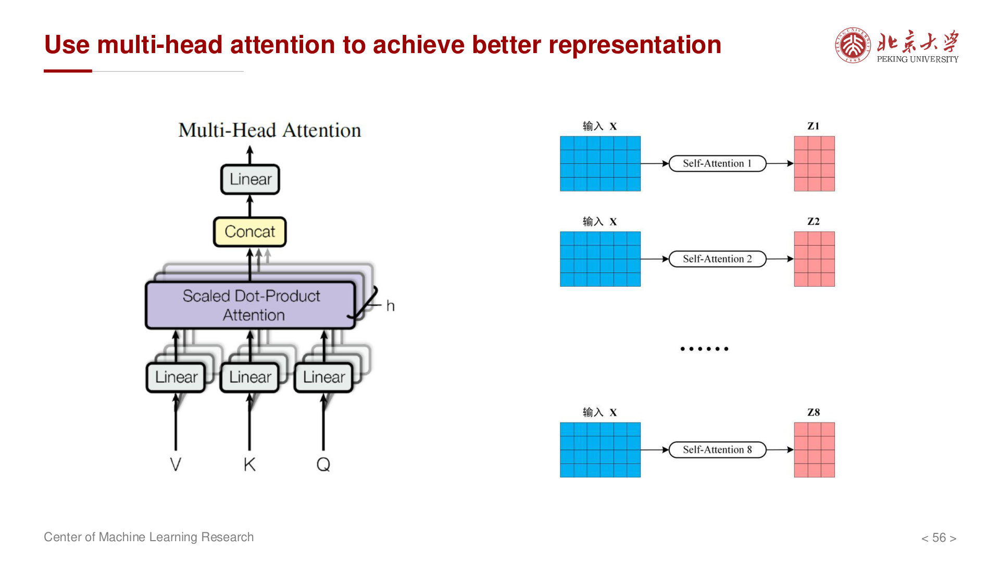
使用多组不同的 \(W_Q, W_K, W_V\) 投影矩阵，让模型在 不同子空间 中关注不同的信息：
- 某些头可能关注语法关系
- 某些头可能关注语义关系
- 某些头可能关注长距离依赖
计算过程¶
对于第 \(i\) 个头：
将所有头的输出拼接后投影：
其中 \(h\) 是头的数量，\(W_O\) 是输出投影矩阵。
Transformer 架构¶
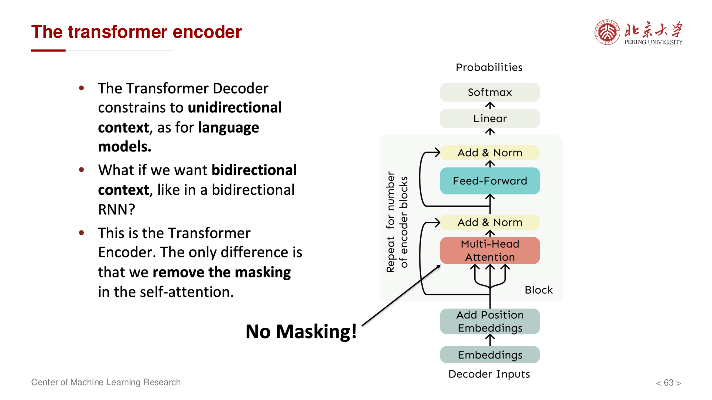
编码器 (Encoder)¶
每个编码器层包含两个子层：
1. Multi-Head Self-Attention
2. Position-wise Feed-Forward Network
或使用 GELU 激活函数的变体。
每个子层都使用 残差连接 (Residual Connection) 和 层归一化 (Layer Normalization)：
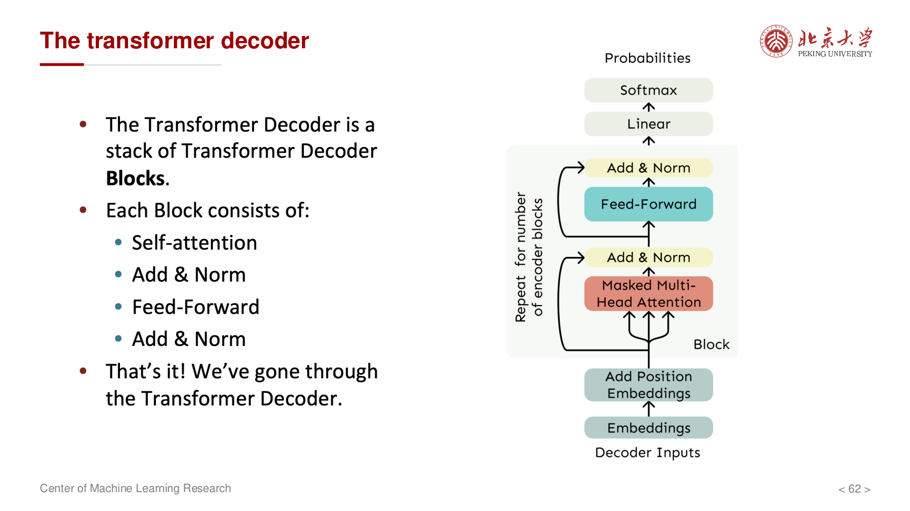
解码器 (Decoder)¶
每个解码器层包含三个子层：
1. Masked Multi-Head Self-Attention
- 防止解码器在预测位置 \(t\) 时看到位置 \(t\) 之后的信息
- 通过 Mask 将未来位置设置为 \(-\infty\)
2. Multi-Head Cross-Attention
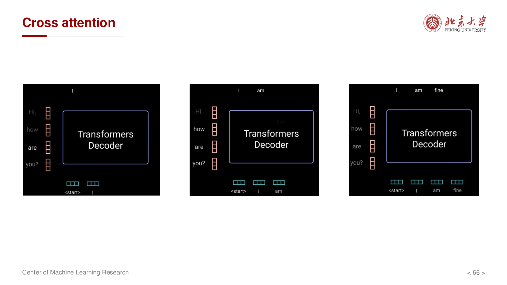
- Query 来自解码器前一层的输出
- Key 和 Value 来自编码器的输出
- 实现编码器-解码器之间的信息交互
3. Position-wise Feed-Forward Network
与编码器相同。
残差连接与层归一化¶
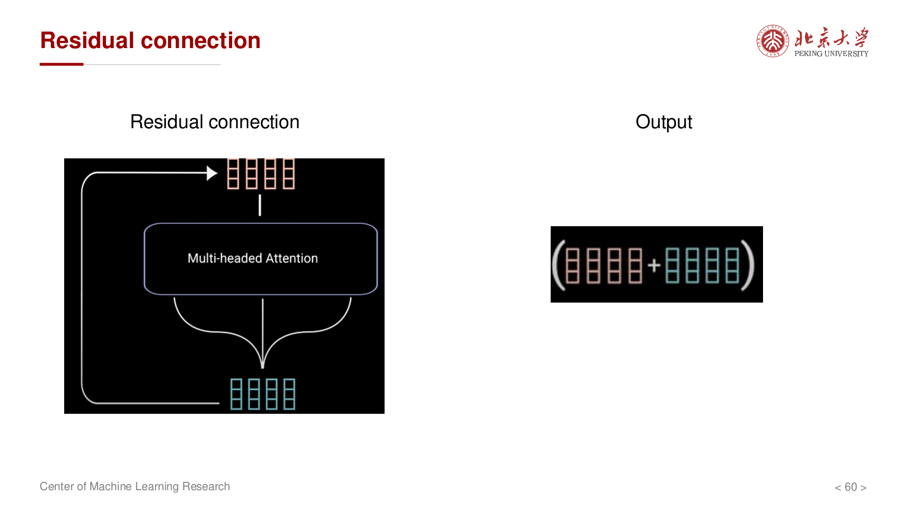
残差连接 (Residual Connection)：
解决深层网络的梯度消失问题，使训练更加稳定。
层归一化 (Layer Normalization)：
对每个样本的所有特征进行归一化，加速训练收敛。
Transformer 的优势与局限¶
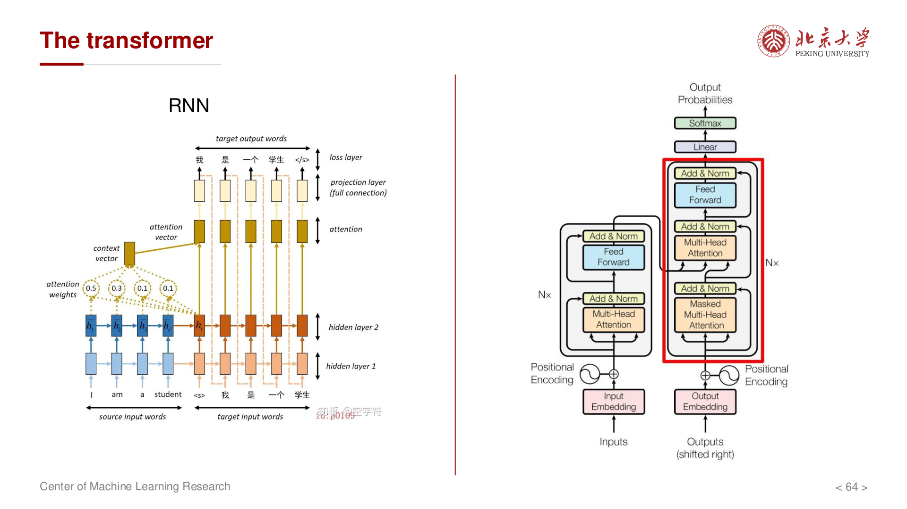
优势¶
- 完全并行：不像 RNN 需要顺序计算
- 长距离依赖：Self-Attention 使任意两个位置直接交互
- 可解释性：注意力权重提供模型决策的可视化
局限¶
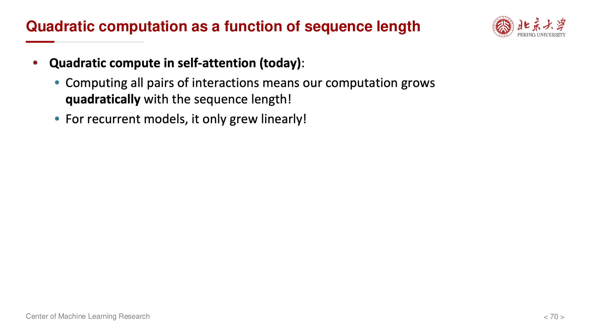
- 计算复杂度：Self-Attention 的时间复杂度为 \(O(n^2 \cdot d)\)
- 内存消耗：需要存储 \(n \times n\) 的注意力矩阵
- 序列长度限制：长序列时计算和内存开销巨大
总结¶
Transformer 是现代 NLP 和大模型的基础架构：
- Self-Attention 提供了强大的序列建模能力
- Multi-Head Attention 增强了表示的多样性
- 位置编码 引入了位置信息
- 残差连接和层归一化 使深层网络可训练
从 BERT 到 GPT 系列，Transformer 架构已经成为深度学习领域的核心组件。